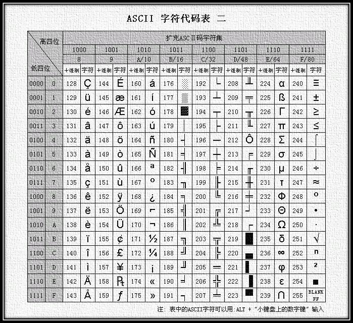

Conjuntos de caracteres y codificación de caracteres: ¡conocimientos que todo desarrollador de software debería dominar sin condiciones!
Estoy seguro de que todos se han encontrado con alguna página web que se muestra como un montón de caracteres ilegibles. ¿Recuerdan los campos de cabecera de mensaje en HTTP como Accept-Charset, Accept-Encoding, Accept-Language, Content-Encoding, Content-Language? Estos son los temas que vamos a explorar a continuación.
Índice:
- 1. Conocimientos básicos
- 2. Conjuntos de caracteres y codificaciones de caracteres comunes
- 2.1. Conjunto de caracteres y codificación ASCII
- 2.2. Conjunto de caracteres y codificación GBXXXX
- 2.3. Conjunto de caracteres y codificación BIG5
- 3. Conjunto de caracteres Unicode y codificación UTF
- 3.1.UCS & UNICODE
- 3.2.UTF-32
- 3.3.UTF-16
- 3.4.UTF-8
- 4.Accept-Charset/Accept-Encoding/Accept-Language/Content-Type/Content-Encoding/Content-Language
- 5. Referencias y lectura adicional
1. Conocimientos básicos
La información almacenada en una computadora se representa mediante números binarios; los caracteres que vemos en la pantalla, como letras inglesas y caracteres chinos, son el resultado de convertir números binarios. En términos simples, las reglas según las cuales se almacenan los caracteres en la computadora, como qué representa a 'a', se denominan "codificación"; a la inversa, interpretar y mostrar los números binarios almacenados en la computadora se denomina "decodificación", similar al cifrado y descifrado en criptografía. Durante la decodificación, si se utilizan reglas de decodificación incorrectas, 'a' podría interpretarse como 'b' o como caracteres ilegibles.
Conjunto de caracteres (Charset): es el conjunto de todos los caracteres abstractos que soporta un sistema. Los caracteres son el término general para varios tipos de texto y símbolos, incluidos los idiomas de cada país, signos de puntuación, símbolos gráficos, números, etc.
Codificación de caracteres (Character Encoding): es un conjunto de reglas que permite emparejar un conjunto de caracteres de un lenguaje natural (como un alfabeto o un silabario) con otro conjunto de elementos (como números o pulsos eléctricos). Es decir, establece una correspondencia entre el conjunto de símbolos y el sistema numérico; es una tecnología básica del procesamiento de información. Generalmente, las personas utilizan conjuntos de símbolos (normalmente texto) para expresar información. Los sistemas de procesamiento de información basados en computadoras utilizan combinaciones de diferentes estados de componentes (hardware) para almacenar y procesar información. Las combinaciones de diferentes estados de los componentes pueden representar números en el sistema numérico, por lo que la codificación de caracteres consiste en convertir símbolos en números del sistema numérico que la computadora puede aceptar, denominados códigos numéricos.
2. Conjuntos de caracteres y codificaciones de caracteres comunes
Nombres comunes de conjuntos de caracteres: conjunto de caracteres ASCII, conjunto de caracteres GB2312, conjunto de caracteres BIG5, conjunto de caracteres GB18030, conjunto de caracteres Unicode, etc. Para que una computadora procese con precisión texto de varios conjuntos de caracteres, es necesario realizar la codificación de caracteres, de modo que la computadora pueda reconocer y almacenar varios tipos de texto.
2.1. Conjunto de caracteres y codificación ASCII
ASCII (American Standard Code for Information Interchange, Código Estándar Estadounidense para el Intercambio de Información) es un sistema de codificación informática basado en el alfabeto latino. Se utiliza principalmente para mostrar inglés moderno, mientras que su versión extendida, EASCII, puede mostrar aproximadamente otros idiomas de Europa occidental. Es el sistema de codificación de un solo byte más utilizado en la actualidad (aunque hay indicios de que Unicode lo está alcanzando) y equivale al estándar internacional ISO/IEC 646.
Conjunto de caracteres ASCII: incluye principalmente caracteres de control (tecla de retorno, retroceso, tecla de nueva línea, etc.); caracteres visualizables (letras mayúsculas y minúsculas en inglés, números arábigos y símbolos occidentales).
Codificación ASCII: las reglas para convertir el conjunto de caracteres ASCII en números del sistema numérico que la computadora puede aceptar. Se utilizan 7 bits para representar un carácter, con un total de 128 caracteres; sin embargo, el conjunto de caracteres codificado con 7 bits solo puede soportar 128 caracteres. Para representar más caracteres europeos de uso común, se extendió ASCII; el conjunto de caracteres ASCII extendido utiliza 8 bits para representar un carácter, con un total de 256 caracteres. El mapeo del conjunto de caracteres ASCII a las reglas de codificación numérica se muestra en la siguiente figura:

Figura 1 Tabla de codificación ASCII

Figura 2 Tabla de codificación ASCII extendida
La mayor desventaja de ASCII es que solo puede mostrar las 26 letras latinas básicas, números arábigos y signos de puntuación británicos, por lo que solo se puede utilizar para mostrar inglés estadounidense moderno (y al procesar palabras extranjeras en inglés como naïve, café, élite, etc., todos los signos de acentuación deben eliminarse, incluso si esto viola las reglas ortográficas). Aunque EASCII resolvió el problema de visualización de algunos idiomas de Europa occidental, sigue siendo incapaz de manejar muchos otros idiomas. Por lo tanto, las computadoras Apple actuales ya han abandonado ASCII y han cambiado a Unicode.
2.2. Conjunto de caracteres y codificación GBXXXX
Cuando se inventó la computadora y durante mucho tiempo después, solo se utilizaba en Estados Unidos y algunos países desarrollados occidentales, y ASCII podía satisfacer bien las necesidades de los usuarios. Pero cuando el Reino Celestial (China) también tuvo computadoras, para poder mostrar chino, fue necesario diseñar un conjunto de reglas de codificación para convertir los caracteres chinos en números del sistema numérico que la computadora pudiera aceptar.
Los expertos del Reino Celestial eliminaron los símbolos extraños después del 127 (es decir, EASCII) y estipularon: un carácter menor que 127 tiene el mismo significado que antes, pero cuando dos caracteres mayores que 127 se juntan, representan un carácter chino. El primer byte (que llaman byte alto) va de 0xA1 a 0xF7, y el segundo byte (byte bajo) va de 0xA1 a 0xFE; de esta manera se pueden combinar aproximadamente más de 7000 caracteres chinos simplificados. En estas codificaciones también se incluyeron símbolos matemáticos, letras romanas y griegas, y kana japoneses; incluso los números, signos de puntuación y letras que ya existían en ASCII fueron recodificados con códigos de dos bytes de longitud. Esto es lo que comúnmente se llama caracteres de "ancho completo", mientras que los que estaban por debajo del 127 se denominan caracteres de "medio ancho".
La regla de codificación anterior es GB2312. GB2312 o GB2312-80 es el conjunto de caracteres chinos simplificados estándar nacional de China, cuyo nombre completo es "Conjunto de caracteres codificados para el intercambio de información en chino · Conjunto básico", también conocido como GB0. Fue publicado por la Administración Nacional de Normas de China e implementado el 1 de mayo de 1981. La codificación GB2312 se utiliza ampliamente en la China continental; Singapur y otros lugares también adoptan esta codificación. Casi todos los sistemas chinos y software internacionalizado en la China continental soportan GB2312. La aparición de GB2312 básicamente satisfizo las necesidades del procesamiento informático de caracteres chinos; los caracteres chinos que incluye cubren el 99.75% de la frecuencia de uso en la China continental. Para caracteres poco comunes que aparecen en nombres personales y chino clásico, GB2312 no puede manejarlos, lo que llevó a la aparición posterior de los conjuntos de caracteres chinos GBK y GB 18030. La siguiente figura muestra la parte inicial de la codificación GB2312 (debido a su gran tamaño, solo se enumera la parte inicial; para más detalles, se puede consultar la tabla de codificación GB2312 de chino simplificado):

Figura 3 Parte inicial de la tabla de codificación GB2312
Dado que GB 2312-80 solo incluye 6763 caracteres chinos, muchos caracteres no están incluidos, como algunos caracteres chinos simplificados después del lanzamiento de GB 2312-80 (como "啰"), algunos caracteres utilizados en nombres personales (como "镕" del ex primer ministro chino Zhu Rongji), los caracteres tradicionales utilizados en Taiwán y Hong Kong, y los caracteres chinos japoneses y coreanos. Por lo tanto, Microsoft, utilizando el espacio de codificación no utilizado de GB 2312-80 e incluyendo todos los caracteres de GB 13000.1-93, creó la codificación GBK. Según la documentación de Microsoft, GBK es una extensión de GB2312-80, es decir, una extensión de la tabla de códigos CP936 (Code Page 936) (anteriormente, CP936 y GB 2312-80 eran idénticas), implementada por primera vez en la versión simplificada china de Windows 95. Aunque GBK incluye todos los caracteres de GB 13000.1-93, el método de codificación no es el mismo. GBK en sí no es un estándar nacional; solo fue publicado como "documento directriz de especificación técnica" por el Departamento de Normalización de la Administración Nacional de Supervisión Técnica y el Departamento de Ciencia, Tecnología y Supervisión de Calidad del Ministerio de Industria Electrónica. El GB13000 original nunca fue adoptado por la industria; el estándar nacional posterior GB18030 es técnicamente compatible con GBK, no con GB13000.
GB 18030, nombre completo: Norma Nacional GB 18030-2005 "Tecnología de la información: Conjunto de caracteres chinos codificados", es el conjunto de caracteres internos más reciente de la República Popular China y es una revisión de la GB 18030-2000 "Tecnología de la información: Conjunto de caracteres chinos codificados para intercambio de información: ampliación del conjunto básico". Es completamente compatible con GB 2312-1980, básicamente compatible con GBK, y soporta todos los caracteres chinos unificados de GB 13000 y Unicode, con un total de 70 244 caracteres chinos. GB 18030 tiene principalmente las siguientes características:
- Igual que UTF-8, utiliza codificación multibyte; cada carácter puede estar compuesto por 1, 2 o 4 bytes.
- El espacio de codificación es enorme; se pueden definir hasta 1,61 millones de caracteres.
- Soporta los escritos de las minorías étnicas de China, sin necesidad de utilizar áreas de creación de caracteres.
- El alcance de inclusión de caracteres chinos abarca caracteres tradicionales y caracteres chinos japoneses y coreanos.

Figura 4 Estructura general de codificación GB18030
El borrador inicial de esta especificación fue elaborado por el Instituto de Estandarización de la Industria Electrónica del Ministerio de Industria de la Información de la República Popular China y publicado por la Administración Nacional de Supervisión de Calidad y Tecnología el 17 de marzo de 2000. La versión actual fue publicada por la Administración General de Supervisión de Calidad, Inspección y Cuarentena y la Administración Nacional de Normalización de China el 8 de noviembre de 2005, e implementada el 1 de mayo de 2006. Esta especificación es obligatoria para todos los productos de software dentro del territorio de China.
2.3. Conjunto de caracteres y codificación BIG5
对外发表。Unicode 还不断在扩增，每个新版本插入更多新的字符。直至目前为止的第六版，Unicode 就已经包含了超过十万个字符（在2005年，Unicode 的第十万个字符被采纳且认可成为标准之一）、一组可用以作为视觉参考的代码图表、一套编码方法与一组标准字符编码、一套包含了上标字、下标字等字符特性的枚举等。Unicode 组织（The Unicode Consortium）是由一个非营利性的机构所运作，并主导 Unicode 的后续发展，其目标在于：将既有的字符编码方案以Unicode 编码方案来加以取代，特别是既有的方案在多语环境下，皆仅有有限的空间以及不兼容的问题。
Big5码是一套双字节字符集，采用了双八码存储方法，以两个字节来存放一个字。第一个字节称为“高位字节”，第二个字节称为“低位字节”。“高位字节”使用了0x81-0xFE，“低位字节”使用了0x40-0x7E，以及0xA1-0xFE。在Big5的分区中：
| 0x8140-0xA0FE | 保留给用户自定义字符（造字区）。 |
| 0xA140-0xA3BF |
标点符号、希腊字母及特殊符号，包括在0xA259-0xA261，安放了九个计量用汉字：兙兛兞兝兡兣嗧瓩糎。 |
| 0xA3C0-0xA3FE | 保留。此区没有开放用作造字区。 |
| 0xA440-0xC67E | 常用汉字，先按笔画再按部首排序。 |
| 0xC6A1-0xC8FE | 保留给用户自定义字符（造字区）。 |
| 0xC940-0xF9D5 | 次常用汉字，亦是先按笔画再按部首排序。 |
| 0xF9D6-0xFEFE | 保留给用户自定义字符（造字区）。 |
3. Conjunto de caracteres Unicode y codificación UTF
伟大的创想Unicode——不得不单独说Unicode
像天朝一样，当计算机传到世界各个国家时，为了适应当地语言和字符，设计和实现了类似GB232/GBK/GB18030/BIG5的编码方案。这样各搞一套，在本地使用没有问题，一旦出现在网络中，由于不兼容，互相访问就出现了乱码现象。
为了解决这个问题，一个伟大的创想产生了——Unicode。Unicode编码系统为表达任意语言的任意字符而设计。它使用4字节的数字来表达每个字母、符号，或者表意文字(ideograph)。每个数字代表唯一的、至少在某种语言中使用的符号。（并不是所有的数字都用上了，但是总数已经超过了65535，所以2个字节的数字是不够用的。）被几种语言共用的字符通常使用相同的数字来编码，除非存在一个正当的语源学(etymological)理由使不这样做。不考虑这种情况的话，每个字符对应一个数字，每个数字对应一个字符。即不存在二义性。不再需要记录“模式”了。U+0041总是代表'A'，即使这种语言没有'A'这个字符。
在计算机科学领域中，Unicode（统一码、万国码、单一码、标准万国码）是业界的一种标准，它可以使电脑得以体现世界上数十种文字的系统。Unicode 是基于通用字符集（Universal Character Set）的标准来发展，并且同时也以书本的形式
（可以这样理解：Unicode是字符集，UTF-32/ UTF-16/ UTF-8是三种字符编码方案。）
3.1.UCS & UNICODE
通用字符集（Universal Character Set，UCS）是由ISO制定的ISO 10646（或称ISO/IEC 10646）标准所定义的标准字符集。历史上存在两个独立的尝试创立单一字符集的组织，即国际标准化组织（ISO）和多语言软件制造商组成的统一码联盟。前者开发的 ISO/IEC 10646 项目，后者开发的统一码项目。因此最初制定了不同的标准。
1991年前后，两个项目的参与者都认识到，世界不需要两个不兼容的字符集。于是，它们开始合并双方的工作成果，并为创立一个单一编码表而协同工作。从Unicode 2.0开始，Unicode采用了与ISO 10646-1相同的字库和字码；ISO也承诺，ISO 10646将不会替超出U+10FFFF的UCS-4编码赋值，以使得两者保持一致。两个项目仍都存在，并独立地公布各自的标准。但统一码联盟和ISO/IEC JTC1/SC2都同意保持两者标准的码表兼容，并紧密地共同调整任何未来的扩展。在发布的时候，Unicode一般都会采用有关字码最常见的字形，但ISO 10646一般都尽可能采用Century字形。
3.2.UTF-32
上述使用4字节的数字来表达每个字母、符号，或者表意文字(ideograph)，每个数字代表唯一的至少在某种语言中使用的符号的编码方案，称为UTF-32。UTF-32又称UCS-4是一种将Unicode字符编码的协定，对每个字符都使用4字节。就空间而言，是非常没有效率的。
这种方法有其优点，最重要的一点就是可以在常数时间内定位字符串里的第N个字符，因为第N个字符从第4×Nth个字节开始。虽然每一个码位使用固定长度的字节看似方便，它并不如其它Unicode编码使用得广泛。
3.3.UTF-16
尽管Unicode字符非常多，但是实际上大多数人不会用到超过前65535个以外的字符。因此，就有了另外一种Unicode编码方式，叫做UTF-16(因为16位 = 2字节)。UTF-16将0–65535范围内的字符编码成2个字节，如果真的需要表达那些很少使用的“星芒层(astral plane)”内超过这65535范围的Unicode字符，则需要使用一些特殊的技巧来实现。UTF-16编码最明显的优点是它在空间效率上比UTF-32高两倍，因为每个字符只需要2个字节来存储（除去65535范围以外的），而不是UTF-32中的4个字节。并且，如果我们假设某个字符串不包含任何星芒层中的字符，那么我们依然可以在常数时间内找到其中的第N个字符，直到它不成立为止这总是一个不错的推断。其编码方法是：
- 如果字符编码U小于0x10000，也就是十进制的0到65535之内，则直接使用两字节表示；
- 如果字符编码U大于0x10000，由于UNICODE编码范围最大为0x10FFFF，从0x10000到0x10FFFF之间共有0xFFFFF个编码，也就是需要20个bit就可以标示这些编码。用U'表示从0-0xFFFFF之间的值，将其前10 bit作为高位和16 bit的数值0xD800进行逻辑or操作，将后10 bit作为低位和0xDC00做逻辑or操作，这样组成的4个byte就构成了U的编码。
对于UTF-32和UTF-16编码方式还有一些其他不明显的缺点。不同的计算机系统会以不同的顺序保存字节。这意味着字符U+4E2D在UTF-16编码方式下可能被保存为4E 2D或者2D 4E，这取决于该系统使用的是大尾端(big-endian)还是小尾端(little-endian)。（对于UTF-32编码方式，则有更多种可能的字节排列。）只要文档没有离开你的计算机，它还是安全的——同一台电脑上的不同程序使用相同的字节顺序(byte order)。但是当我们需要在系统之间传输这个文档的时候，也许在万维网中，我们就需要一种方法来指示当前我们的字节是怎样存储的。不然的话，接收文档的计算机就无法知道这两个字节4E 2D表达的到底是U+4E2D还是U+2D4E。
为了解决这个问题，多字节的Unicode编码方式定义了一个“字节顺序标记(Byte Order Mark)”，它是一个特殊的非打印字符，你可以把它包含在文档的开头来指示你所使用的字节顺序。对于UTF-16，字节顺序标记是U+FEFF。如果收到一个以字节FF FE开头的UTF-16编码的文档，你就能确定它的字节顺序是单向的(one way)的了；如果它以FE FF开头，则可以确定字节顺序反向了。
3.4.UTF-8
UTF-8（8-bit Unicode Transformation Format）是一种针对Unicode的可变长度字符编码（定长码），也是一种前缀码。它可以用来表示Unicode标准中的任何字符，且其编码中的第一个字节仍与ASCII兼容，这使得原来处理ASCII字符的软件无须或只须做少部分修改，即可继续使用。因此，它逐渐成为电子邮件、网页及其他存储或传送文字的应用中，优先采用的编码。互联网工程工作小组（IETF）要求所有互联网协议都必须支持UTF-8编码。
UTF-8使用一至四个字节为每个字符编码：
- 128个US-ASCII字符只需一个字节编码（Unicode范围由U+0000至U+007F）。
- 2. El latín con diacríticos, el griego, el cirílico, el armenio, el hebreo, el árabe, el siríaco y el alfabeto thaana requieren codificación de dos bytes (rango Unicode de U+0080 a U+07FF).
- Otros caracteres del plano básico multilingüe (BMP) (que incluye la mayoría de los caracteres comunes) se codifican con tres bytes.
- Otros caracteres de los planos suplementarios de Unicode, que se usan muy raramente, se codifican con cuatro bytes.
Es muy eficiente para el manejo de los caracteres ASCII que se usan con frecuencia. En el manejo de los conjuntos de caracteres latinos extendidos, tampoco es inferior a UTF-16. Para los caracteres chinos, es mejor que UTF-32. Al mismo tiempo, (en este punto tienes que creerme, porque no pretendo mostrarte sus principios matemáticos.) Debido a la naturaleza de las operaciones de bits, con UTF-8 ya no existe el problema del orden de bytes. Un documento codificado en UTF-8 es el mismo flujo de bits entre diferentes computadoras.
En general, en una cadena Unicode no es posible determinar la longitud necesaria para mostrarla a partir del número de puntos de código, ni la posición donde debería colocarse el cursor en el búfer de texto después de mostrar la cadena; los caracteres combinados, las fuentes de ancho variable, los caracteres no imprimibles y los textos de derecha a izquierda son sus causas. Así que aunque en las cadenas UTF-8 la relación entre el número de caracteres y el número de puntos de código es más compleja que en UTF-32, en la práctica rara vez se encuentran situaciones diferentes.
Ventajas
- UTF-8 es un superconjunto de ASCII. Dado que una cadena ASCII pura también es una cadena UTF-8 válida, el texto ASCII existente no necesita conversión. El software diseñado para los conjuntos de caracteres ASCII extendidos tradicionales normalmente puede funcionar con UTF-8 sin modificaciones o con muy pocas modificaciones.
- Ordenar UTF-8 con rutinas de ordenación estándar orientadas a bytes producirá los mismos resultados que ordenar según los puntos de código Unicode. (Aunque esto solo tiene una utilidad limitada, porque en cualquier idioma o cultura concreta es poco probable que haya un orden de clasificación de texto que siga siendo aceptable.)
- UTF-8 y UTF-16 son ambas codificaciones estándar para documentos XML. Todas las demás codificaciones deben especificarse mediante una declaración explícita o de texto.
- Cualquier algoritmo de búsqueda de cadenas orientado a bytes puede utilizarse con datos UTF-8 (siempre que la entrada consista únicamente en caracteres UTF-8 completos). Sin embargo, se debe tener cuidado con las expresiones regulares u otras estructuras que contengan conteo de caracteres.
- Las cadenas UTF-8 pueden reconocerse de forma fiable mediante un algoritmo simple. Es decir, la probabilidad de que una cadena en cualquier otra codificación parezca un UTF-8 válido es muy baja, y disminuye a medida que aumenta la longitud de la cadena. Por ejemplo, los valores de carácter C0, C1, F5 a FF nunca aparecen. Para una mayor fiabilidad, se pueden usar expresiones regulares para detectar sobrelongitudes ilegales y valores sustitutos (se puede consultarW3 FAQ: Multilingual Formsla expresión regular para validar cadenas UTF-8 en).
Desventajas
Debido a que cada carácter se codifica con una cantidad diferente de bytes, encontrar el enésimo carácter en una cadena es una operación de complejidad O(N) — es decir, cuanto más larga es la cadena, más tiempo se necesita para localizar un carácter concreto. Además, se requieren manipulaciones de bits para codificar caracteres en bytes y decodificar bytes en caracteres.
4.Accept-Charset/Accept-Encoding/Accept-Language/Content-Type/Content-Encoding/Content-Language
En HTTP, las cabeceras de mensaje relacionadas con el conjunto de caracteres y la codificación de caracteres son Accept-Charset/Content-Type; además, se distinguen principalmente Accept-Charset/Accept-Encoding/Accept-Language/Content-Type/Content-Encoding/Content-Language:
Accept-Charset: el navegador declara el conjunto de caracteres que acepta; estos son los diversos conjuntos de caracteres y codificaciones de caracteres presentados anteriormente en este artículo, como gb2312, utf-8 (normalmente decimos que Charset incluye el esquema de codificación de caracteres correspondiente);
Accept-Encoding: el navegador declara los métodos de codificación que acepta; normalmente especifica el método de compresión, si admite compresión y qué métodos de compresión admite (gzip, deflate). (Nota: esto no se refiere a la codificación de caracteres);
Accept-Language: el navegador declara los idiomas que acepta. La diferencia entre idioma y conjunto de caracteres: el chino es un idioma, y el chino tiene varios conjuntos de caracteres, como big5, gb2312, gbk, etc.;
Content-Type: el servidor WEB le indica al navegador el tipo y el conjunto de caracteres del objeto de su respuesta. Por ejemplo: Content-Type: text/html; charset='gb2312'
Content-Encoding: el servidor WEB indica qué método de compresión (gzip, deflate) utilizó para comprimir los objetos en la respuesta. Por ejemplo: Content-Encoding: gzip
Content-Language: el servidor WEB le dice al navegador el idioma del objeto de su respuesta.
5. Referencias y lectura adicional
- Baidu Baike. Conjunto de caracteres.http://baike.baidu.com/view/51987.htm, 2010-12-28
- Wikipedia. Codificación de caracteres.http://zh.wikipedia.org/wiki/%E5%AD%97%E7%AC%A6%E7%BC%96%E7%A0%81, 2011-1-5
- Wikipedia. ASCII.http://zh.wikipedia.org/wiki/ASCII, 2011-4-5
- Wikipedia. GB2312.http://zh.wikipedia.org/wiki/GB_2312, 2011-3-17
- Wikipedia. GB18030.http://zh.wikipedia.org/wiki/GB_18030, 2010-3-10
- Wikipedia. GBK.http://zh.wikipedia.org/wiki/GBK, 2011-3-7
- Wikipedia. Unicode.http://zh.wikipedia.org/wiki/Unicode, 2011-4-30
- Laruence. Explicación detallada de la codificación de caracteres (básico).http://www.laruence.com/2009/08/22/1059.html, 2009-8-22
- Jan Hunt. Character Sets and Encoding for Web Designers - UCS/UNICODE. http://www.uninetnews.com/other_standards/charset.php
Autor: Wu Qin
Fuente: http://www.cnblogs.com/skynet/archive/2011/05/03/2035105.html
Haz clic para compartir notas
<p style="font-size:14px;">¡La nota debe ser una extensión del contenido de este artículo!</p><br> <p style="font-size:12px;"><a href="../tougao.html" target="_blank">Para enviar un artículo, haz clic aquí</a></p> <p style="font-size:14px;"><a href="./runoob-user-test-intro.html" target="_blank">Cómo obtener el código de invitación de registro</a></p> <h3 class="text-muted"><i class="fa fa-info-circle" aria-hidden="true"></i> Antes de compartir notas debes <a href=".." class="runoob-pop">iniciar sesión</a>!</h3> <p><a href="./runoob-user-test-intro.html" target="_blank">Cómo obtener el código de invitación de registro</a></p>